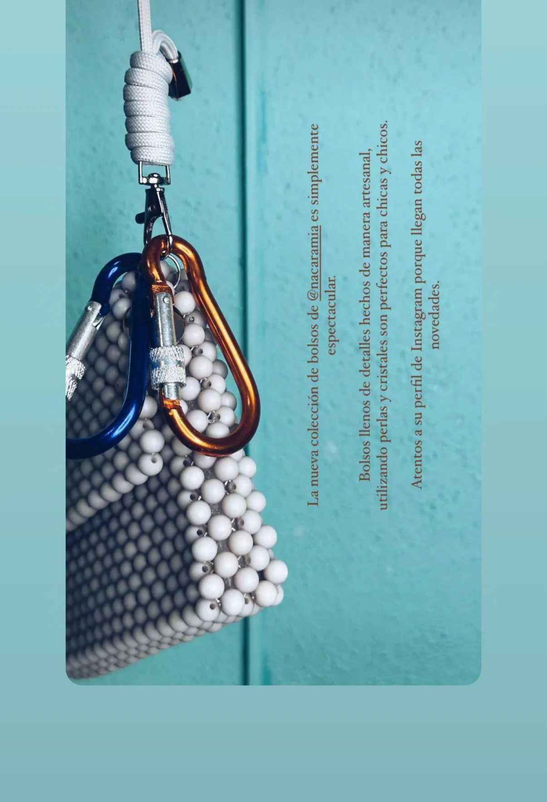
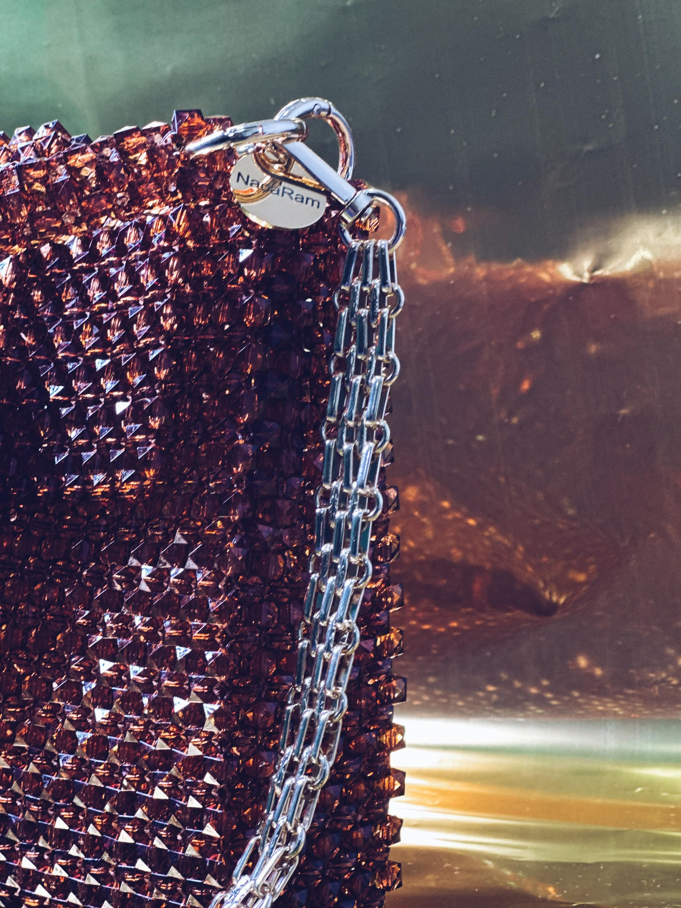

Publicado el 23 de noviembre de 2024
¡Únete a nuestra comunidad!
¡Nos encantaría que formes parte de la familia NacaRam! Estamos trabajando en nuevas colecciones llenas de detalles únicos y con todo el amor de nuestra artesanía.Queremos compartir... Leer más
Publicado el 19 de noviembre de 2024
Navidad: Brilla en estas fiestas
¿Qué hace que un momento sea verdaderamente especial? El bolso Luxe está aquí para acompañarte en esas ocasiones que merecen destacar, esas noches donde quieres que cada detalle cuente. Diseñado pensando en la temporada navideña y más allá,... Leer más

Publicado el 18 de noviembre de 2024
Pau: Nuestro Best Sellers
El bolso Pau es nuestra pieza más icónica hasta el momento, diseñado con 2185 cuentas y disponible en varios tonos con los que hemos intentado reflejar la belleza de la naturaleza de nuestra isla... Leer más
Publicado el 18 de noviembre de 2024
¿Quienes somos?
En NacaRam creemos en los cambios, en los sueños y en el poder de la creatividad. Nuestra historia nace de la pasión por la moda y los complementos, y de la voluntad de crear algo único y especial,... Leer más